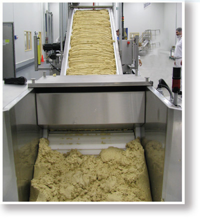

Transport Systems to maximize quality and productivity.
Read About Our Industry Leading Transport System Below:

Custom Dough Transport Systems
At CMC America, everything we do is customized to your needs, your recipes and your operation. Once your batch is ready, we know that it needs to be transported very efficiently and very respectfully to its next process. There is no ‘one size fits all’ solution. Every dough type has its own needs. To keep time, temperature and quality standards, those needs must be met with different systems that maintain dough integrity and quality.
CMC Custom Dough Transport Systems are tailored to maximize quality and productivity. Our largest mixers can produce over 15 tons of dough per hour. Our Dough Transport Systems can convey, or meter, this, or any, volume into the next process to keep your operation moving.
Safe & Sanitary
With FDA/USDA sanitary design, superior guarding, several different sanitary plastic or stainless feed methods and stainless steel, water-tight operator controls, CMC Custom Dough Transport Systems protect the integrity of your dough.
Inclined Conveyance that Respects the Dough
Our Custom Dough Transport systems are as efficient and gentle as our mixers are durable and dependable. We want what you want: high quality finished product. That takes smooth presentation of dough at the proper speed into the divider hopper with no ‘traffic jams’, roll backs or dough quality differences.
Custom Manufactured and Installed
Every bakery is unique. We will build our Custom Dough Transport Systems to fit right in to your operation. Then, we will install to make sure that you and your team will obtain maximum results.
Want to download or print more information about our Transport Systems?
Click the button below to open the .pdf document. You can then download and print the detailed information!